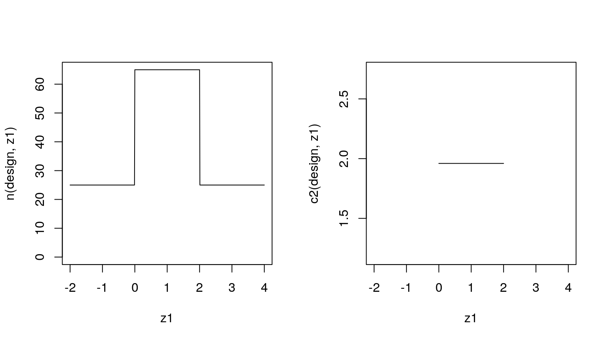
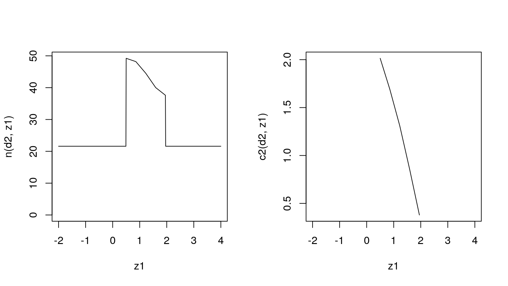
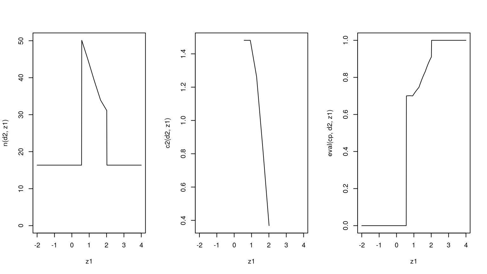

quickstart.Rmdsome initial design
n1 <- 25
c1f <- .0
c1e <- 2.0
n2_piv <- rep(40.0, 5)
c2_piv <- rep( 1.96, 5)
design <- FivePointDesign(n1, c1f, c1e, n2_piv, c2_piv)
z1 <- seq(-2, 4, .01)
par(mfrow = c(1, 2))
plot(z1, n(design, z1), 'l', ylim = c(0, max(n(design, z1))))
plot(z1, c2(design, z1), 'l')
# define null and alternative as point mass distributions
null <- PointMassPrior(.0, 1)
alternative <- PointMassPrior(.4, 1)
ess <- integrate(SampleSize(alternative))
cp <- ConditionalPower(alternative)
pow <- integrate(cp)
toer <- integrate(ConditionalPower(null))
smth <- Smoothness_n2()
do.call(sprintf,
c(
list("ESS: %.1f, power: %.3f, maximal type one error rate: %.3f"),
lapply(list(ess, pow, toer), function(s) eval(s, design))
)
)
#> [1] "ESS: 44.1, power: 0.842, maximal type one error rate: 0.035"objective <- function(x) {
d <- update(design, x)
eval(ess, d) + .001*eval(smth, d)
}
objective(as.numeric(design))
#> [1] 44.1024
constraint <- function(x) {
d <- update(design, x)
c(
.8 - eval(pow, d),
eval(toer, d) - 0.05,
x[2] - x[3] + .1,
diff(c2(d, get_knots(d)))
)
}
constraint(as.numeric(design))
#> [1] -0.04165701 -0.01531485 -1.90000000 0.00000000 0.00000000 0.00000000
#> [7] 0.00000000
ub <- c(50, 1, 4, numeric(5) + 50, numeric(5) + 5)
lb <- c(10, -1, 1, numeric(5) + 2, numeric(5) - 5)
res <- nloptr::nloptr(
as.numeric(design),
lb = lb,
ub = ub,
eval_f = objective,
eval_g_ineq = constraint,
opts = list(
algorithm = "NLOPT_LN_COBYLA",
xtol_rel = 1e-4,
maxeval = 2500
)
)
d2 <- update(design, res$solution)
par(mfrow = c(1, 2))
plot(z1, n(d2, z1), 'l', ylim = c(0, max(n(d2, z1))))
plot(z1, c2(d2, z1), 'l')
Compute the scores using fast internal representation (5-point Newton-Cotes).
do.call(sprintf,
c(
list("ESS: %.1f, power: %.3f, maximal type one error rate: %.3f"),
lapply(list(ess, pow, toer), function(s) eval(s, d2, specific = TRUE))
)
)
#> [1] "ESS: 31.3, power: 0.800, maximal type one error rate: 0.050"Compute the scores using adaptive quadrature rules (increased precision but slow).
do.call(sprintf,
c(
list("ESS: %.1f, power: %.3f, maximal type one error rate: %.3f"),
lapply(list(ess, pow, toer), function(s) eval(s, d2, specific = FALSE))
)
)
#> [1] "ESS: 31.3, power: 0.800, maximal type one error rate: 0.050"okay, so what changes when we use a continuous prior instead?
f <- function(x) dnorm(x, .5, .2)
limits <- c(0, 1)
z <- stats::integrate(f, limits[1], limits[2], abs.tol = .0001)$value
pdf <- function(x) f(x) / z
alternative <- ContinuousPrior(pdf, limits)
ess <- integrate(SampleSize(alternative))
# just for the fun of it lets condition on detla >= .1
alternative_cond <- condition(alternative, c(.1, 1.))
cp <- ConditionalPower(alternative_cond)
pow <- integrate(cp)
toer <- integrate(ConditionalPower(null))
smth <- Smoothness_n2()
do.call(sprintf,
c(
list("ESS: %.1f, power: %.3f, maximal type one error rate: %.3f"),
lapply(list(ess, pow, toer), function(s) eval(s, design))
)
)
#> [1] "ESS: 38.0, power: 0.852, maximal type one error rate: 0.035"CP power constraints!
objective <- function(x) {
d <- update(design, x)
eval(ess, d) + .001*eval(smth, d)
}
objective(as.numeric(design))
#> [1] 37.99332
constraint <- function(x) {
d <- update(design, x)
c(
.8 - eval(pow, d),
eval(toer, d) - 0.05,
x[2] - x[3] + .25,
diff(c2(d, get_knots(d))),
.7 - eval(cp, d, get_knots(d))
)
}
constraint(as.numeric(design))
#> [1] -0.05208667 -0.01531485 -1.75000000 0.00000000 0.00000000
#> [6] 0.00000000 0.00000000 0.25333903 0.18177145 0.10410814
#> [11] 0.02502911 -0.05010698
ub <- c(50, 1, 4, numeric(5) + 50, numeric(5) + 5)
lb <- c(10, -1, 1, numeric(5) + 2, numeric(5) - 5)
res <- nloptr::nloptr(
as.numeric(design),
lb = lb,
ub = ub,
eval_f = objective,
eval_g_ineq = constraint,
opts = list(
algorithm = "NLOPT_LN_COBYLA",
xtol_rel = 1e-4,
maxeval = 2500
)
)
d2 <- update(design, res$solution)
par(mfrow = c(1, 3))
plot(z1, n(d2, z1), 'l', ylim = c(0, max(n(d2, z1))))
plot(z1, c2(d2, z1), 'l')
plot(z1, eval(cp, d2, z1), 'l')